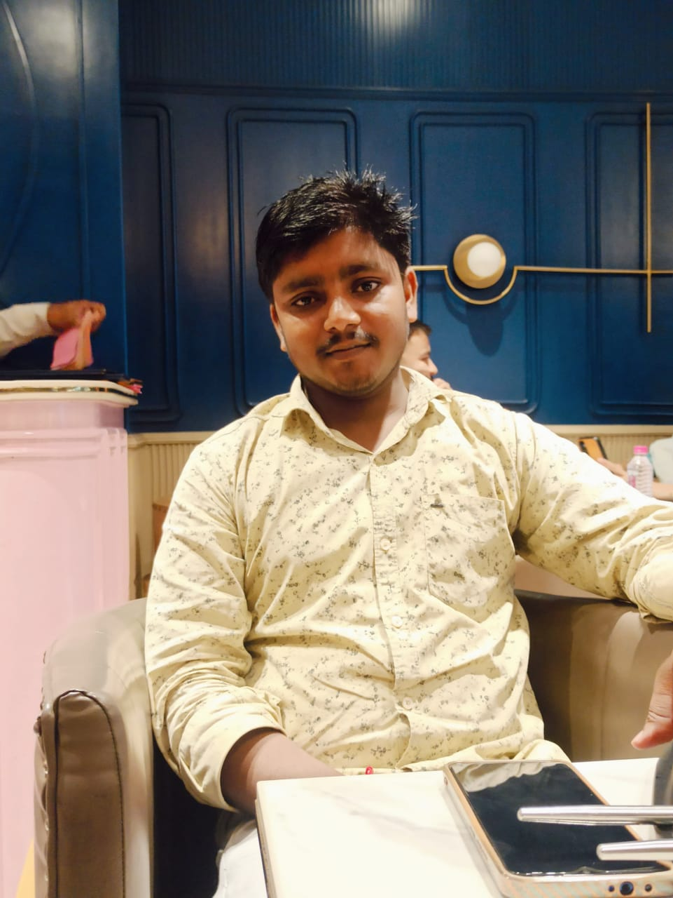

Welcome to my website!
Hello, my
name’s Himanshu.
I’m a web developer

Scroll down
Welcome to my website!
I’m a web developer
Hi, I'm Himanshu, a passionate full-stack web developer with a love for turning ideas into interactive and functional web applications. With experience in both frontend and backend technologies, I specialize in building responsive websites and dynamic dashboards using tools like Flask, Chart.js, and Python. Currently, I’m working on a data visualization project that transforms CSV data into meaningful insights using modern web technologies. I enjoy solving problems, learning new tools, and continuously improving my craft. When I’m not coding, you’ll find me exploring new tech trends, preparing for academic challenges, or just diving into something creative!
Here are some of my highlighted projects.
A dynamic dashboard visualizing programming language trends using Chart.js and Python backend.